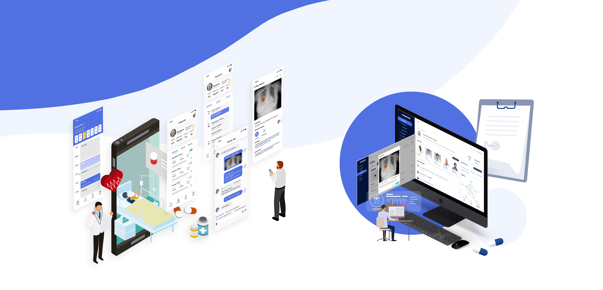
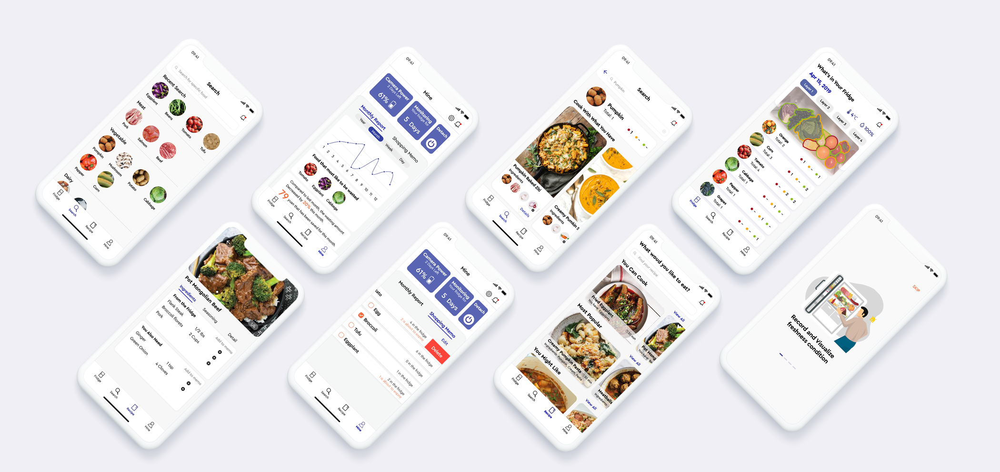
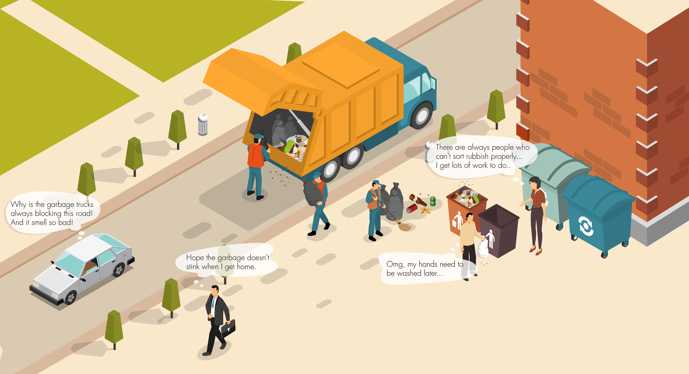

DiDi | Online Group Purchasing Experience
Redesigning the workflow of Arrival Notice for the application on the group leaders' side

HospiLink | Design Workshop
Building a closer relationship between the patients' family and doctors

Freedge | Food Management
An applicaiton that helps keep track of the storage and freshness of food in your firdge.
